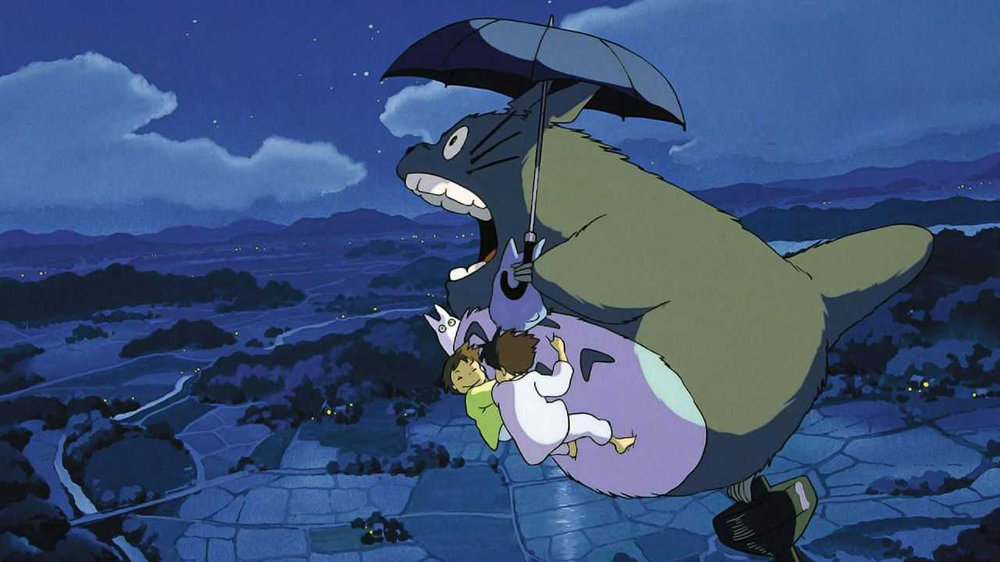
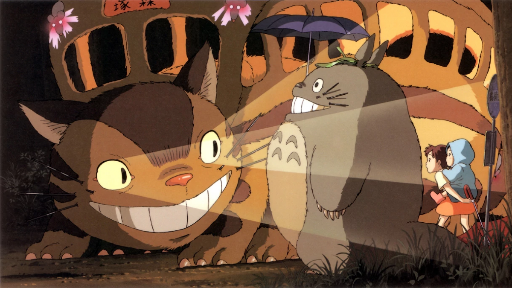

Nada de lo que sucede se olvida.
Nada de lo que sucede se olvida.
Mi vecino Totoro
Por Pablo Villa y David Perez
'Mi vecino Totoro' cuenta la historia de dos niñas, Satsuki y Mei, que se mudan con su padre a una casa que se encuentra cerca del bosque, mientras su madre está recuperándose de tuberculosis en un sanatorio rural, al llegar a su nuevo hogar descubren a unas criaturas llamadas "conejos de polvo o duendes del ojin”. Un día Mei, mientras cortaba flores, se encuentra con dos pequeños seres que la llevarán directo a Totoro o como su padre lo llama, él 'Rey del bosque', sin embargo, solamente las personas de corazón puro son las que pueden verlas. Después Satsuki conocería a Totoro, en una escena que pasaría a ser de las más icónicas de toda la película, y al Gatobús. Conforme pasa el tiempo los encuentros con el rey del bosque se hacen más frecuentes, pero un día llega una carta de parte del sanatorio por lo que Satsuki sale corriendo, y debido a los problemas que se han suscitado, Mei se va de la casa por lo que su hermana va a buscarla, pero al no encontrarla recurrirá a pedir ayuda a Totoro para hacer que regrese sana y salva.

La película es un retrato de la vida rural japonesa en los años cincuenta. Un profesor universitario se traslada junto a sus dos hijas, Mei y Satsuki, a una casa cerca de un bosque mientras su mujer se recupera de tuberculosis en un sanatorio rural. Un día, por casualidad, la más pequeña descubre la existencia de los Totoros: espíritus guardianes del bosque que sólo los niños de corazón puro son capaces de ver. Junto a estas entrañables criaturas y al gatobús, Mei y su hermana descubrirán el verdadero valor de la amistad, del amor y de la familia en una maravillosa e inolvidable aventura que les llevará más allá de su imaginación.

Como curiosidad, los nombres de las hijas hacen referencia al mes de Mayo. Mei es la transcripción fonética de May en inglés, y Satsuki era el nombre que recibía antiguamente en Japón el quinto mes. En lo que respecta a los Totoros, esos espíritus del bosque que habitan en el interior de un gigantesco árbol milenario, más específicamente, en un alcanforero, son tres:
- Dai-Totoro (大トトロ) (Gran Totoro): El de mayor tamaño de color gris y el más conocido de los tres.
- Chū-Totoro (中トトロ) (Mediano Totoro): De color azul.
- Chibi-Totoro (小トトロ) (Pequeño Totoro): De color blanco.